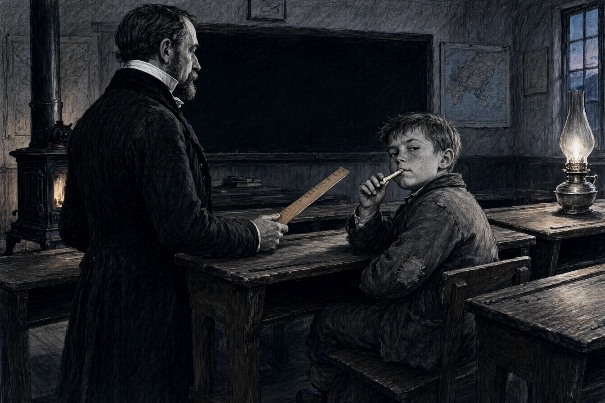

Dans la classe de cours moyen de l'école primaire du quai des Pêcheurs à Sélestat, le maître d'école Émile Bézard régnait depuis trente-deux ans avec une règle plate en bois de buis et un catéchisme laïque relié en percaline noire. Petit homme sec aux tempes garnies de favoris poivre et sel, le col cassé amidonné jusqu'au menton, Monsieur Bézard avait pour devise : Le devoir avant la récréation, la propreté avant l'esprit.
Sur l'estrade, il corrigeait les cahiers de devoirs du soir à l'encre violette d'une écriture penchée et rigide.
Devant lui, au troisième rang de chêne ciré, le jeune Léo Walter, fils d'un marchand de ferraille du faubourg des Charrons, mâchonnait un porte-plume en os avec un détachement insolent.
Monsieur Bézard frappa la table d'un coup sec du plat de sa règle.
« Walter, récitez la maxime civique du jour numéro quatorze. « Le travail épargne à l'homme le vice, le besoin et l'ennui, monsieur le directeur, » débita le gamin sans se lever, les yeux fixés sur un nid de moineaux sous la corniche du préau. »
Bézard descendit les deux marches de l'estrade à petits pas raides.
« On se lève pour énoncer la morale républicaine, Walter ! Et on retire ses doigts poisseux du plumier. Pourquoi votre devoir de calcul de ce matin n'est-il pas rendu ? « Mon père avait besoin d'un coup de main pour décharger trois tonnes de rails de tramway à la gare de marchandises, monsieur le directeur. Il a dit que le calcul des intérêts simples ne rapportait pas le prix d'un sac de pommes de terre si les rails restaient sous la pluie. » « Votre père est un matérialiste grossier, Walter ! L'instruction est le seul levier qui hisse l'artisan au-dessus de sa condition. Vous resterez deux heures en retenue ce soir pour recopier cinquante fois : Le mépris de la règle conduit à l'échafaud. » »
Léo haussa ses petites épaules rondes sans baisser le regard.
* * *
À dix-sept heures, l'école s'était vidée de ses rumeurs de galoches et de cris d'enfants. Seul le poêle en fonte crépitait dans le silence de la classe, dégageant une odeur de houille et de poussière de craie.
Monsieur Bézard, assis à son bureau de chêne, préparait l'inspection générale du lendemain matin. Monsieur l'inspecteur d'académie d'arrondissement devait assister à la leçon de morale patriotique.
Léo, assis tout seul au fond de la pièce, noircissait sa page d'écriture avec une application méthodique.
Bézard releva la tête.
« Vous avez fini, Walter ? « Oui, monsieur le directeur. J'ai même compté les lettres. Ça fait deux mille trois cent cinquante caractères d'encre violette. Mon père dit que pour le même temps passé à trier des écrous en laiton chez monsieur le maire, j'aurais gagné quatre sous d'argent de poche. » « L'argent d'un enfant est une souillure morale, » trancha le maître en rangeant son tampon buvard. »
Il s'approcha du pupitre du garçon, prit la feuille, l'examina à la lumière de la lampe à pétrole et fronça les sourcils.
« Vous avez omis le point final à la quarante-huitième ligne. « La plume s'est fendue, monsieur. Mais mon père a dit de vous demander si le sac de coke que les agents voyers ont déposé dans votre cave hier soir était compté dans les fournitures scolaires de la mairie ou dans vos émoluments personnels. » »
Bézard devint pâle comme une assiette de faïence. Sa main trembla sur la règle de buis.
« Qui… qui vous a raconté cette fable, petit insolent ? « C'est mon père qui a conduit la carriole communale, monsieur le directeur. Il a dit qu'un pédagogue chauffé aux frais des contribuables devait être deux fois plus indulgent avec les fils de pauvres. » »
* * *
Le lendemain matin à neuf heures, la grande classe était cirée à neuf, les élèves alignés deux par deux, les ongles propres posés sur le buvard rose.
Monsieur l'inspecteur d'académie, un homme majestueux portant ruban violet à la boutonnière de sa redingote, s'assit au fond de la salle avec un carnet de notes maroquiné.
Monsieur Bézard monta sur l'estrade, le teint cireux, la gorge nouée.
« Mes enfants, commença-t-il d'une voix qui manquait singulièrement de projection, nous allons interroger un élève sur la pureté des intentions civiques. Walter, levez-vous. »
Léo se leva d'un bond, le visage rayonnant d'une innocence parfaite.
« Walter, dit le maître en s'appuyant au tableau noir pour dissimuler le tremblement de ses genoux, récitez à monsieur l'inspecteur la sentence sur la discrétion et le respect des autorités communales. « Un bon citoyen, récita l'enfant d'une voix claire qui résonna sous les poutres de l'école, sait voir la charbonnière sans compter les pelletées de son voisin. Il honore les maîtres qui instruisent son esprit et ne regarde jamais sous la bâche de la carriole du maire. » »
L'inspecteur d'académie cessa d'écrire, surpris, puis hocha la tête avec une gravité approbatrice.
« Fort bien tourné, monsieur Bézard. Une métaphore rurale d'une rusticité fort saine. Continuez. »
Bézard déglutit avec peine, essuya son front trempé de sueur avec son grand mouchoir à carreaux, et fixa le petit garçon qui lui souriait de toutes ses dents de lait depuis le troisième rang.